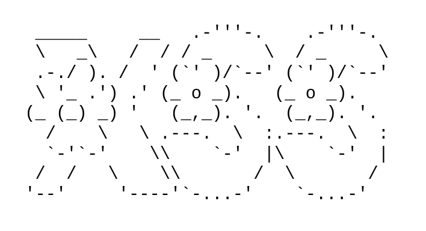

Alert("XSS detected")
April 8, 2026

ASCII Art by https://patorjk.com
Continuing the trend of OWASP Web security vulnerabilities, we will discuss Cross-Site Scripting (XSS) - how it works, how attackers exploit it and how to protect web services against XSS. If you haven't read the last part on SQL injection you can find it here
What is XSS
Put simply, XSS, is the JavaScript equivalent to SQL injection. Instead of executing arbitrary SQL queries we are injecting JavaScript code that is executed by the victim to reveal some sensitive information like session cookies, passwords or other data accessible to the web browser.
XSS occurs when:
- Data enters the Web application through an untrusted source, most frequently a web request
- The data is included in dynamic content that is sent to a web user without being validated for malicious content
XSS can be performed through various different tags with varying complexity but the most common are <script></script>
tags, attributes like onload or src attributes on <img> tags. All of the above execute some JavaScript
code and, if HTML input is not sanitised correctly, injected directly into a web page.
More advanced XSS payloads will be encoded (i.e. base64, Hex or URL Encoding) and will show more sophisticated evasion techniques to bypass XSS firewalls or sanitation algorithms. To learn more you can read this (external link) article.
Types of XSS
XSS comes in different forms that can generally be narrowed down to the following three:
Reflected XSS
This is where the injected script is "reflected" by the web server. Reflected attacks are exploited through other routes such as e-mail or SMS. When the victim presses a malicious link or visits a malicious site, the injected code is run in the user's browser. Reflected XSS is also known as Non-Persistent or Type-I XSS. This means the victim essentially "self-inflicts" the payload.
Stored XSS
This is where the injected script is stored on the target servers, such as a database, message forum, visitor log, comment field etc.The victim retrieves the malicious script when he requests the information. Stored XSS is also known as Persistent or Type-II XSS
DOM XSS
The payload is run as a result of modifying the DOM "environment". This means the payload never reaches the server and is typically achieved by tricking the victim into clicking a malicious link, that alters the DOM.
What protective measures can you take?
- Output encoding
- HTML Sanitization (for example with DOMPurify)
- Safe Sinks
- Use Cookie attributes
- Use Content Security Policy
- Use Web Application Firewalls